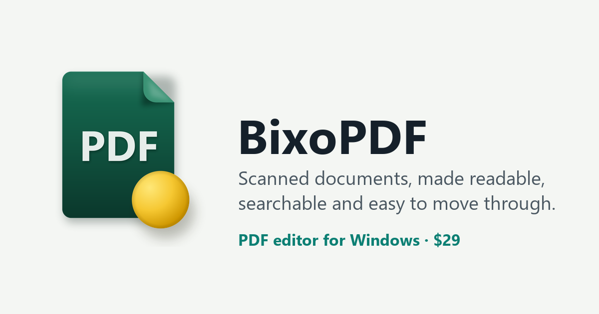

Press kit
In one sentence
BixoPDF is a $29 PDF editor for Windows that makes scanned documents readable, searchable and easy to move through, with OCR in 50 languages that runs on your own PC.
In one paragraph
BixoPDF is a PDF editor for Windows 10 and 11 from Bixo. Alongside bookmarks, annotations, memos and page tools, it includes what scanned documents need: OCR that recognizes text in 50 languages on the user's own PC, image enhancement and thicker strokes for faint pages, bookmarks and hyperlinks built from a book's contents page, compression for large scans, and a dictionary in seven languages for any word on the page. It works offline and needs no account. It is sold once for $29 on Microsoft Store, with no subscription, and a 15-day trial version of the full app is available from the website.
Key facts
| Name | BixoPDF |
|---|---|
| Publisher | Bixo |
| Platform | Windows 10 version 1809 or later, and Windows 11, 64-bit |
| Price | $29, one-time purchase; all features included, no subscription |
| Where to buy | Microsoft Store, ID 9NJL2KH3TLKM (store page) |
| Trial | 15 days, full app, no watermark; one trial per PC |
| Current version | 1.3.7 (trial setup, 163 MB) |
| OCR languages | 50, all included, run on the PC |
| Dictionary | English, Korean, Japanese, Chinese, German, French, Russian; free language packs |
| App languages | English, Korean, Japanese, Chinese (simplified and traditional), Russian, Hindi, Arabic |
| Account / internet | No account; works offline (dictionary packs are downloaded once) |
| Website | www.bixopdf.com |
| Contact | support@bixopdf.com |
Features
- Fast with large files. A 3,286-page, 383 MB file was on screen in under a second on our own Windows 11 PC; jumping to its last page took 0.2 seconds.
- Bookmarks, annotations and memos saved as standard PDF, with every annotation in one list.
- OCR on the PC in 50 languages, including Korean, Chinese, Japanese, Arabic and Devanagari, with batch OCR and a searchable text layer. On 36 scanned pages of a Korean book, BixoPDF got 0.84% of characters wrong, against 2.31% and 4.20% for two leading PDF programs; on an English book it matched the better of the two (method and disclaimer).
- Scan enhancement: thickness, sharpness, contrast and brightness with a live preview; crop, split spreads, straighten.
- Bookmarks and links from the contents page, with doubtful lines flagged for correction.
- Compression: a 1,082-page scanned book from 609 MB to 332 MB, colour pages kept.
- Dictionary in seven languages: double-click a word on the page.
- Everyday tools: merge, split, rotate and reorder pages; search a folder of PDFs; AES-256 passwords; export to Word, Excel, JPG and PNG; watermarks; focus mode.
Details of each feature are on the home page.
Screenshots and logo
Click a picture to open the full-size file.



Try it
The trial setup is not code-signed yet, so Windows SmartScreen may show a warning; choose More info, then Run anyway. The Store version shows no warning.
Questions
Does BixoPDF send documents to a server?
No. OCR runs on the PC and the app needs no account. The only download is a dictionary language pack, once, when the user asks for it.
How can I get a copy to review?
The 15-day trial version is the full app with no watermark and no limits. For anything else, write to support@bixopdf.com.
Where is BixoPDF sold?
On Microsoft Store, for $29, paid once. Store ID 9NJL2KH3TLKM.
Contact
For interviews, review questions or anything else: support@bixopdf.com.